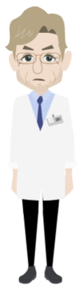

Dr. Martin
Meet Northviken · chapter 3 of 8
- Welcome to Northviken
- DEAHL-Connect
- Meet the people
- The rooms
- Timeline and scenes
- How it has been used
- What’s new
- Build on it

Clinical staff · age 46
Consultant, General Internal Medicine, general ward
Uses whatever cuts his admin and improves decisions. When he found he had to enter data twice, he stopped logging in, and less experienced colleagues noticed.
“Show me one piece of DEAHL-Connect data that changed a clinical decision on this ward. One.”
- Sceptical for good reasons
- Would be a strong champion if the value were shown
- Raises a fair governance question
Usually found in: General ward.